Meadow: A Physics-Grounded Three-Layer Learning Stack for Robot Control
獨立研究者,台北 · akai@fawstudio.com
本文提出 Meadow,一個以物理狀態(而非感知觀察)為歸納偏置基底的機器人控制學習堆疊。Meadow 將控制問題拆解為三個明確分離的層:(i)物理層,在模擬器動力學下展開候選軌跡的因果樹;(ii)神經評分網路,在所得分支上學習成功似然;(iii)神經反應策略,將被選中的因果鏈蒸餾為可部署的低延遲控制器。具名變數校正迴圈封閉了整個系統:當部署行為偏離預測的因果鏈時,規格中具名的物理參數會被重新估計,受影響的層在本地重新蒸餾——無需完整重訓,也不需要重新收集示範資料。我們在四個代表性任務(TwoRoom、PushT、Reacher、OGBench Cube)上回報端到端結果:單任務評分網路驗證準確率最高達 0.9990;PushT 上達到次像素級反應精度(最終 block 誤差 0.81 px);同一條 pipeline 通過 OGBench v1 四個 family 的 API check,每個 family 僅使用 443–2,724 條軌跡樣本。Apple Silicon 上 Core ML 反應推論為 0.095–0.122 ms。
從最愛的物理學走進這個世界。大學哥本哈根詮釋徹底改變我看待世界方式——波粒二重性、測不準原理、機率波、機率波崩解。多年後,AMI Labs 提出的框架——「intelligence does not begin in language but in the world」——對我有著同樣的衝擊。
在我看來,這是同一個信念,被講述在不同的領域:一個有智慧的 agent 與它所行動的世界並不可分,而智能的結構反映了物理互動的結構。我深深被這個視野吸引,Meadow 在某種程度上,是我自己嘗試把這個信念認真做出來的回應。
Meadow 嘗試從物理狀態那一側起步。這個選擇也受到發展神經科學一個觀察的影響:試著思考嬰兒似乎對世界的第一次接觸是透過前庭、皮膚觸覺、聲音與呼吸空氣來感知這個世界,隨後當他們產生視覺能力,再透過一次次的物體互動的感知過程理解這個世界。Meadow 在第一層把這些物理通道當作第一級的觀察量,透過對物理的互動開始在世界做任何他可做的事情;同時也能了解他的輸出與輸入間的因果,透過因果關係的強弱,一次次形成多條鏈開始探索與完成任務。第二層將這些相關的因果鏈過程與最強的因果鏈組成訓練資料,希望可以了解並且產生能理解抽象視界的能力。第三層訓練的模型會和第一層的因果鏈保持聯繫,在有差距的時候即時進行修正——目標希望和 A Path Towards Autonomous Machine Intelligence [1] 中所主張的精神是一致的。
我以致敬先行者的態度提出這份報告。如果有引用錯誤或是理解錯誤,希望可以獲得指導與修正。
當代機器人學習的主流範式,把感知視為主要基底:一個高容量的神經網路接收像素觀察、輸出動作,讓梯度下降在大資料集上負責還原物理結構 [1]。這條路線已經產出許多令人印象深刻的結果,但它把兩個本質不同的學習問題——感知表徵的學習與控制的學習——耦合進同一個最佳化過程,並繼承了「從單眼像素序列推論物理量(質量、摩擦、接觸)」這個本身就 ill-posed 的困難。
另一個起點來自發展神經科學的一般共識:前庭、本體感覺與觸覺訊號在子宮中即已發育,出生時功能上已大致成熟;而視覺皮層需要出生後數個月才能達到成人水準。換言之,一個生物 agent 對自身所處物理世界形成的最初模型,是建立在物理而非感知的基本量之上。
我們把這個觀察當作一個設計原則來認真對待。Meadow 把物理狀態接受為第一級的可觀察量:設備參數、接觸力、關節位置、目標門檻,以宣告式 spec 中具型別的變數形式進入系統,而不是必須從影像中還原的量。系統接著在這個狀態上、在物理 backend 之下進行因果展開,以神經評分網路學習對分支的價值,並把所選因果鏈蒸餾為一個小型的反應策略。我們將證明這樣的拆解同時帶來三個性質:(i)每一層都有具名且可被檢視的歸納偏置;(ii)在小規模訓練語料下仍能高效學習;(iii)當部署時行為發生漂移,系統能定位到具體的物理參數變化、並在本地重新蒸餾。
本文貢獻。
Meadow 把機器人控制拆成三個層,每一層都有明確的角色,以及明確存在(或明確不存在)的學習器。系統的輸入是三個具型別的規格:DeviceSpec 宣告致動器、關節與物理約束;SceneSpec 宣告物件與接觸幾何;GoalSpec 宣告任務門檻與安全邊界。
給定一個 spec 與初始狀態,模擬器在物理動力學下推進候選未來。當分支違反 spec 中編碼的物理約束(關節限制、碰撞、控制飽和)或 GoalSpec 中的任務約束時即被剪除。最終得到的樹,其節點是物理上可達的狀態,其邊是允許的轉移。我們把成功鏈、近 miss 與被剪除的失敗分支全部以結構化記錄保留下來。
一個神經網路被訓練去把(狀態、候選延伸)對應到一個連續的成功分數。關鍵在於:訓練分布就是 Layer 1 的物理過濾樹——正例是成功鏈,負例是被剪除或近 miss 的分支。不需要額外的 hard-negative mining,評分網路所學到的表徵也自動繼承來自基底的物理一致性。
反應策略是一個小型神經網路,從評分網路所選出的因果鏈中蒸餾而來。視任務結構而定,我們使用 behavior-cloning 變體或 k-nearest-neighbor exemplar 變體(細節見 §4)。策略運作於 spec 中宣告的同一個物理狀態空間,因此它的輸入與輸出在語義上仍是可檢視的。
值得注意的是,spec 層對觀察來源是不可知的(observation-source agnostic)。在沒有模擬器狀態的場景中,spec 框架可以由一個學習出來的編碼器(視覺、觸覺、多模態)來填充,Layer 1–3 不變。我們在 §5.2 進一步討論這個整合點。
spec 驅動設計的一個核心性質是:對學習有意義的變數都有名字——摩擦係數、負載質量、阻尼比、感測器偏移。當部署中的反應策略產生的軌跡偏離預測的因果鏈時,這個偏離可以被歸因到具體的物理參數,而不是不透明的「概念漂移」。
這與端到端學習的控制器形成對照:後者面對漂移時,只能(i)重新收集在新條件下的示範資料,或(ii)重新訓練一個內部表徵無法檢視的不透明策略——失敗的維度從來沒有名字。
我們在四個跨越導航、接觸操作、手臂控制、抓放的任務上實例化 Meadow 堆疊。Table 1 回報每個任務的評分與反應表現;Figure 3 顯示代表性的 rollout。所有數字皆來自本機 artifact,沒有任何外推到公開 benchmark 的宣稱。
| 任務 | 因果 / 評分 | Success Rate | 精度 | 訓練樣本 | 設備 | Iter | Wall-clock |
|---|---|---|---|---|---|---|---|
| TwoRoom(2D 導航) | val_acc 0.9990 (79/80) | 80/80 (100%) | 二元終點 | 49,920 | M1 Max · MLX | 1,799 | ~48 s |
| PushT(接觸) | 4/4 pose-aware guard | 2/2 (100%) | final 0.81 px | 1,010 / 315 | M1 Max · MLX | — (oracle) | ~56 s¹ / ~112 s² |
| Reacher(手臂) | 4/4;median 0.00369 | 2/2 (100%) | mean final dist 0.00494 | 288 / 144 | M1 Max · MLX | — (oracle) | ~分鐘級³ |
| OGBench Cube | val_acc 0.9963 (60/60) | 4/4 (100%) | phase-conditioned | 35,200 | M1 Max · MLX | 1,399 | ~25 s |
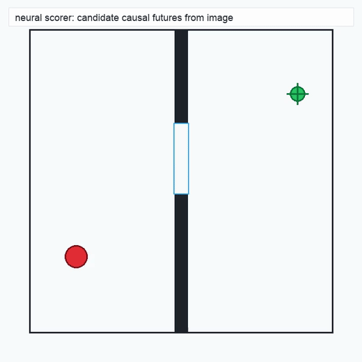
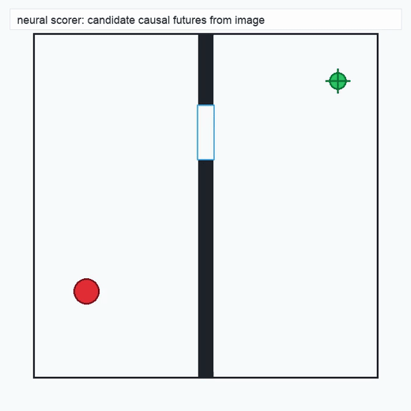
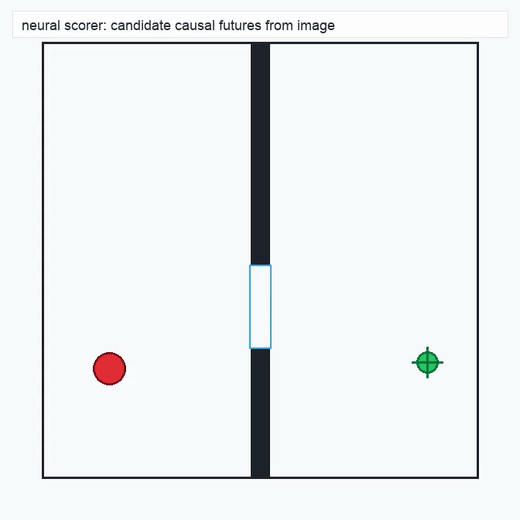
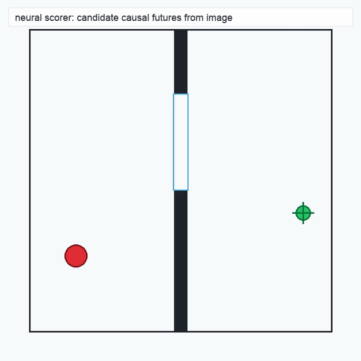
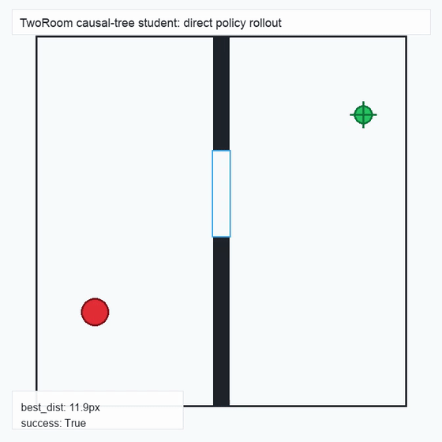
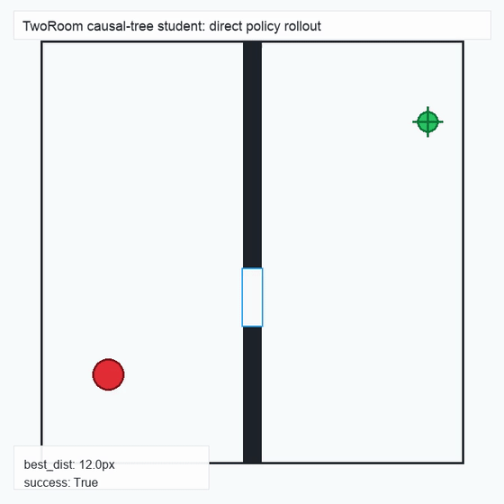
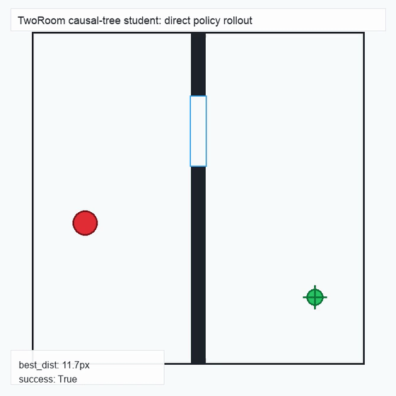
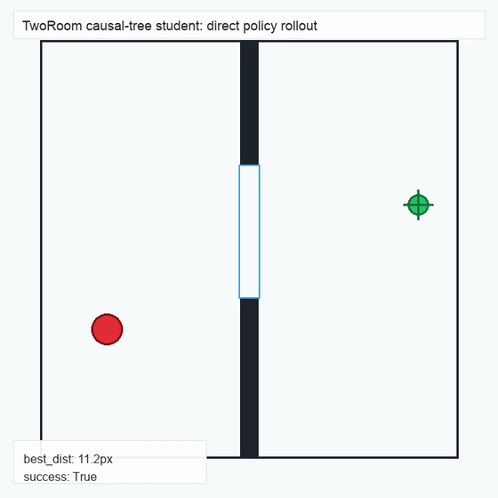
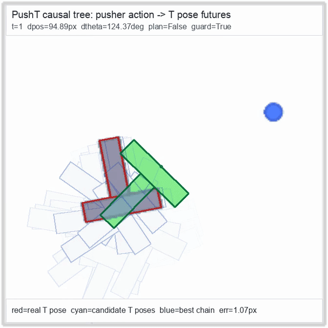
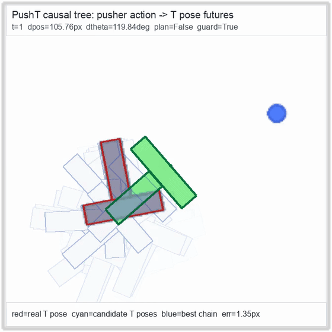
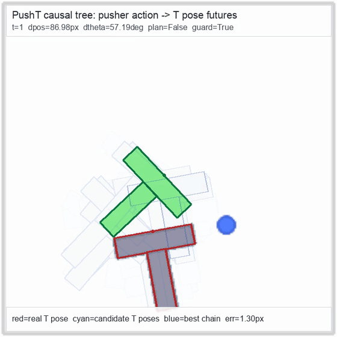
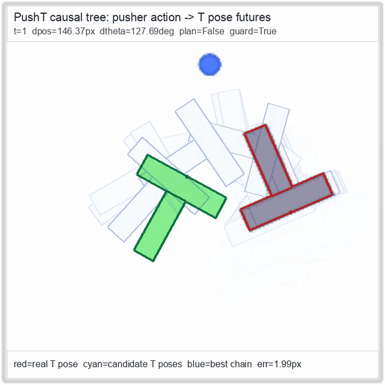
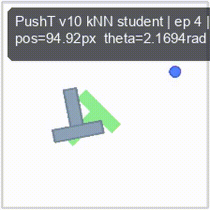
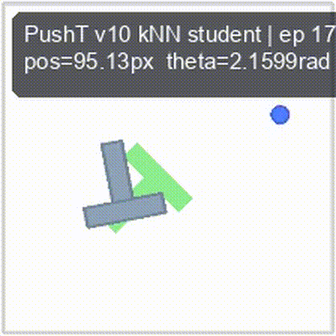
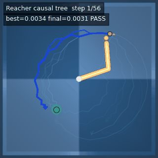
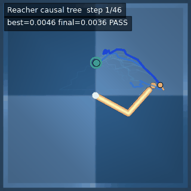
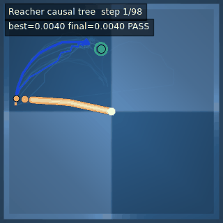
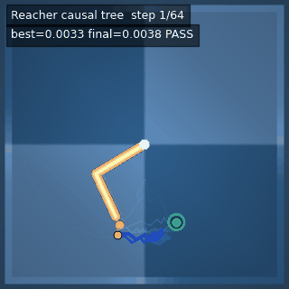
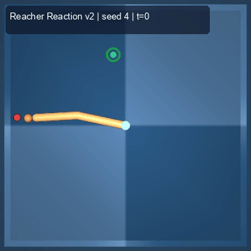
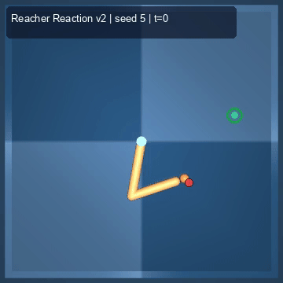
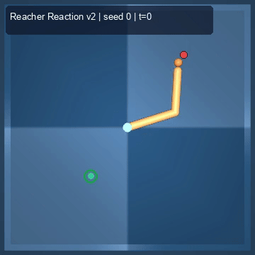
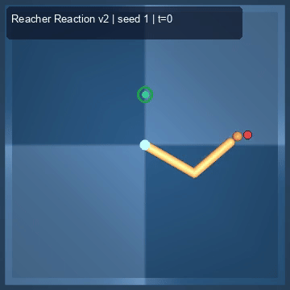
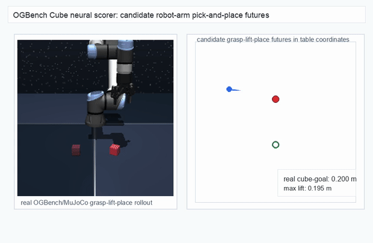
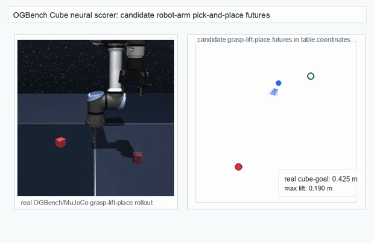
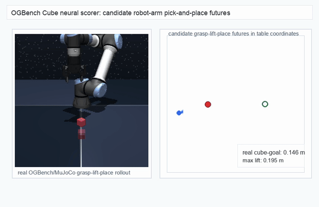
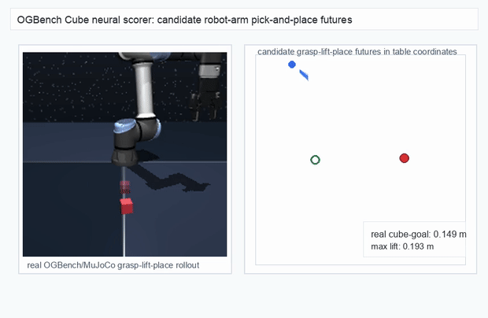
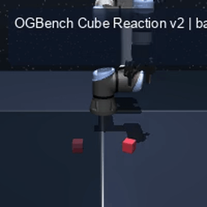
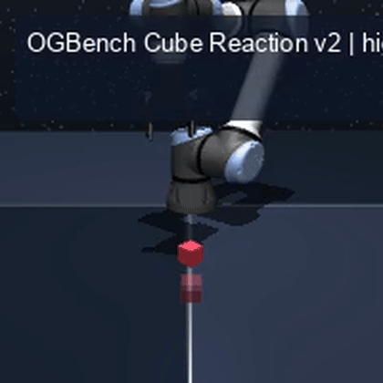
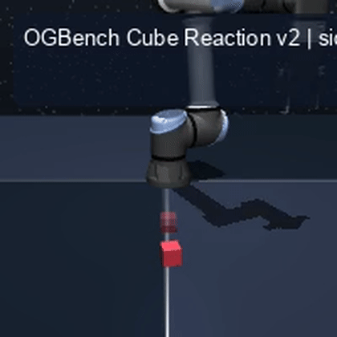
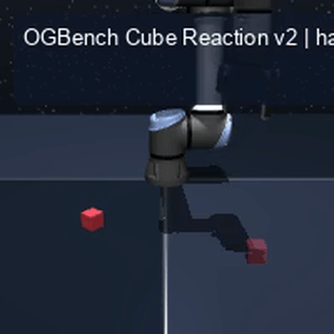
metrics.json。實線為 val_acc;虛線為 selected_success_rate。Cube 的 selected success rate 從 iter 0 的 6.7% 在 200 iter 內躍升至 98.3%——展示「物理過濾的訓練資料 + 緊緻 scorer」的 sample efficiency。最終 val_acc:TwoRoom 0.9990(iter 1799)、Cube 0.9963(iter 1399)。為了測試「同一條展開–評分–反應 pipeline 是否能在不同任務 family 上只靠改 spec 就 transfer」,我們在 OGBench v1 [2] 四個 family 上跑 API check。結果整理於 Table 2。同一份程式碼在每個 family 上都得到 8/8,任務樣本數介於 443 到 2,724 之間。
| Family | 環境 | 因果 | 反應 | 樣本 | 因果 / 反應 (ms) |
|---|---|---|---|---|---|
| Cube | cube-single-singletask-task1-v0 |
8/8 | 8/8 | 894 | 70.96 / 73.55 |
| PointMaze | pointmaze-medium-singletask-task1-v0 |
8/8 | 8/8 | 2,724 | 21.99 / 22.74 |
| Scene | scene-singletask-task1-v0 |
8/8 | 8/8 | 903 | 74.61 / 64.17 |
| Puzzle | puzzle-3x3-singletask-task1-v0 |
8/8 | 8/8 | 443 | 52.34 / 36.42 |
聯合嵌入預測架構(JEPA)[1] 處理的是 Meadow 並未嘗試處理的問題:從原始像素學習一個不會 collapse 的預測 latent 表徵。我們把自己的工作視為從同一座橋的另一邊建造起來。Meadow 的 spec 層接受物理狀態作為輸入;當這樣的狀態不可得時,我們預期可以由 JEPA-class 編碼器或類似的學習編碼器來填充 spec 框架,作為 Layer 1 的上游。在我們看來,兩條路線最自然的讀法,是把它們當作同一個未來堆疊的兩層——一邊是感知,另一邊是基於具名物理的規劃與控制。
這個拆解也分開了兩個常被混為一談的問題。一個是開放的經驗問題:預測式自監督是否能湧現出物理一致的表徵?另一個是工程問題:在已經有具名物理狀態的前提下,如何規劃與控制?Meadow 對前者不持立場,對後者提供一個明確、可檢視的結構,期望兩個答案最終能在中間相遇。
有一個選擇值得直接說明,因為它有時被誤解為「回到手工設計 prior」:Meadow 的 spec 是對機器人本體、關節、接觸幾何與目標的明確、具名描述——不是隱性的,但人類所需投入的工作量並不比當今任何機器人學習 pipeline 大。Diffusion Policy 透過在特定機器人上的遙控示範,繼承同樣的物理規格;π0 透過多機器人資料集的組裝繼承它;JEPA 風格的世界模型 [1] 透過其訓練環境繼承它;傳統控制則透過任何模擬 pipeline 都必須準備的 URDF 與 MuJoCo / Isaac 模型繼承它。Meadow 的選擇不是引入更多人類撰寫的 prior——而是把「大家本來就需要」的描述,當作第一級、具名、可檢視的輸入,而不是把它埋進資料集收集或模擬器設定中。這樣做的好處正是讓 §3 的校正迴圈成為可能:當現實漂移時,具名變數可以被重新估計;隱性變數則不行。
spec 介面是具型別的,但對觀察來源不可知。本體感覺的關節編碼器、力/扭矩感測器、IMU 串流、觸覺陣列,都可以作為一個具型別的通道進入,Layer 1–3 不變。整合這些模態是一個正在進行中的工程方向;我們把它視為 §1 中發展神經科學起點的自然延伸——前庭與本體感覺先於視覺。
本工作的起點源於哥本哈根詮釋的幾個核心概念。在因果樹架構落地的過程中,我們發現其中三個概念在結構上與 Meadow 的設計有自然對應,一個是中等強度的結構類比,並且還有兩個重要結構(分支干涉與糾纏)目前未被實現——後者構成自然的下一步研究方向。
| 哥本哈根詮釋概念 | Meadow 中的對應 | 對應強度 | 當前未實現之處 |
|---|---|---|---|
| 波粒二重性 | Think 模式(分支分布) ↔ Reaction 模式(蒸餾後的單一可執行軌跡) | 強 | — |
| 機率波 (Ψ) | 整棵因果樹 ≈ 所有可能未來的分布;scorer 分數 ≈ |Ψ|² | 強 | 分支間干涉:目前 branch 互相獨立,沒有疊加項 |
| 機率波崩解 | scorer 選定 chain ≈ 從 branched possibilities collapse 到 single trajectory(架構圖中即命名為 Collapse) |
強 | — |
| 測不準原理 | think-depth ↔ reaction-latency 的共軛 trade-off;spec 解析度 ↔ 計算成本 | 中 | 尚無 quantitative 不等式形式的 bound |
| (衍生)糾纏 | — | — | 多 agent 共享 spec 變數時的因果樹耦合,目前未實作 |
未實現的三個結構同時指向具體的研究方向:
程式碼與已持久化 artifact:本機 repository(可依需求釋出)。Demo:meadow_v002.html。 聯絡:akai@fawstudio.com。